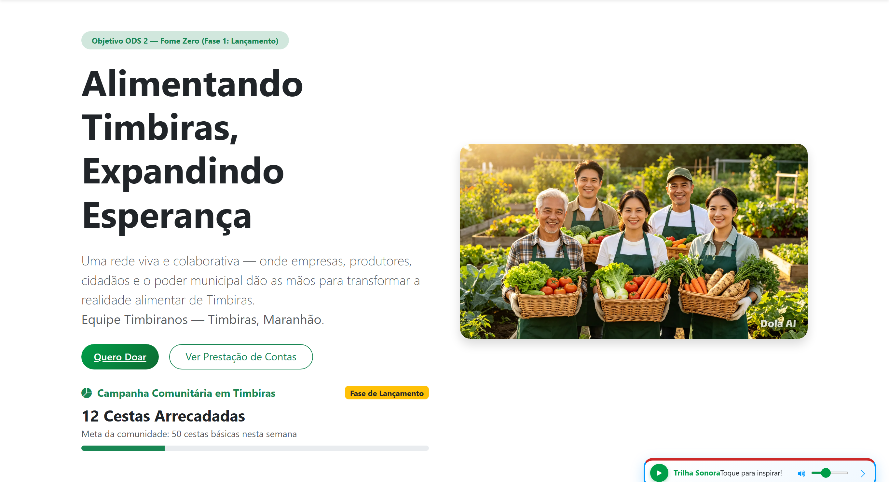
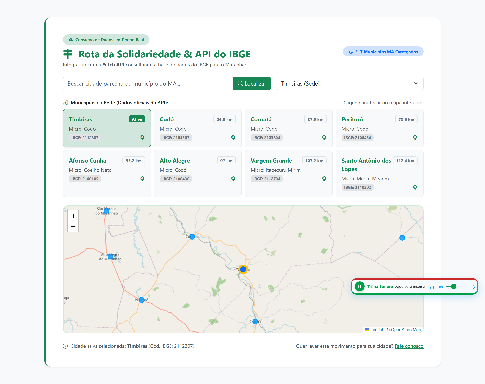
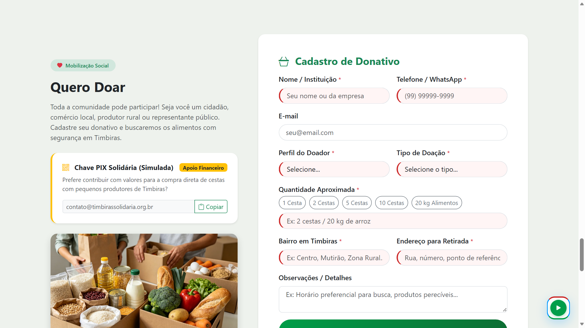
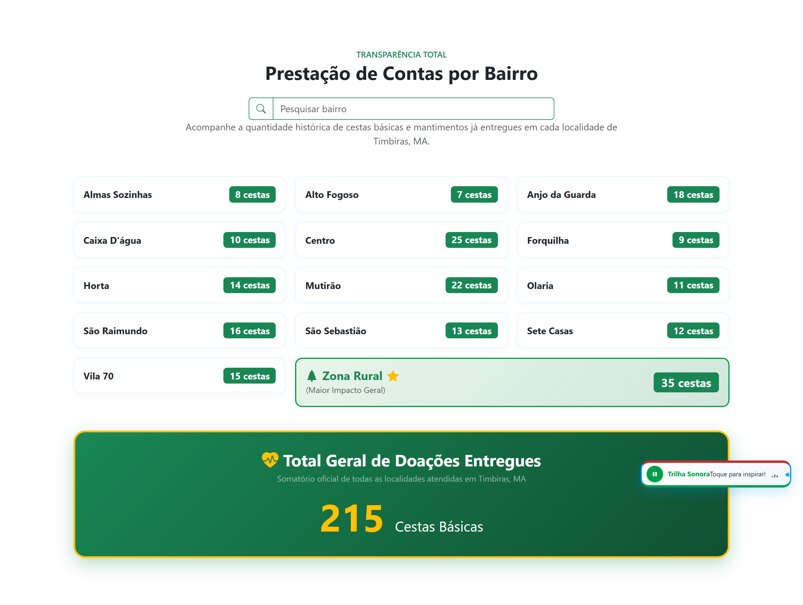
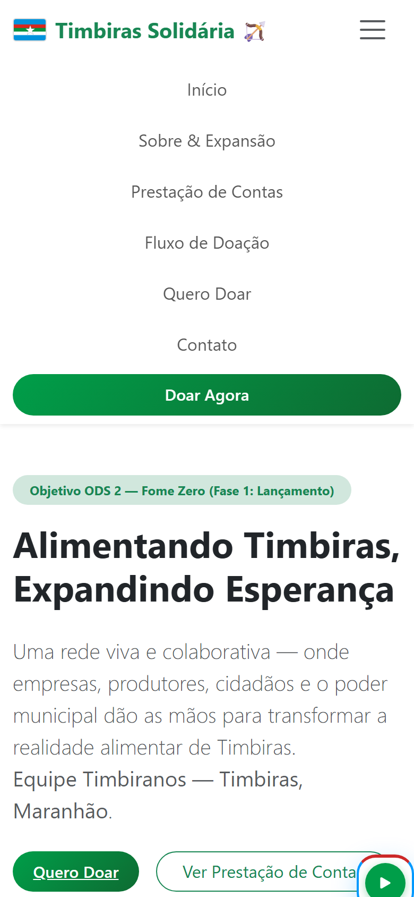

Como a tecnologia web pode encurtar distâncias, combater a fome e unir uma comunidade inteira em torno do ODS 2 da ONU.
A fome não é um número abstrato em uma planilha. Ela tem nome, endereço e rosto nos bairros e na zona rural da nossa cidade.
Timbiras é uma cidade acolhedora, forte e trabalhadora, banhada pelas águas do Rio Itapecuru. Mas, como tantas cidades do interior do Maranhão, muitas famílias de bairros como Forquilha, Mutirão, Alto Fogoso e povoados rurais distantes enfrentam dias difíceis para garantir o básico na mesa.
Alinhamos o projeto à meta da ONU de Fome Zero e Agricultura Sustentável. Nosso foco não é assistencialismo frio, mas mobilização comunitária com valorização do agricultor familiar local.
Na Nota 1, criamos uma interface estática em HTML5, CSS3 e Bootstrap. Era bonita, organizada e responsiva, mas funcionava como um panfleto digital: parada, passiva, sem diálogo com quem acessava.
Na Nota 2, nossa missão foi dar vida e coração a esse projeto. Uma iniciativa social precisa de calor, interação instantânea e segurança: quando alguém preenche uma doação, precisa sentir que aquele ato gerou uma resposta no mundo real.
• Retorno Imediato: Ao enviar uma doação, a meta comunitária sobe na mesma hora no topo do site e um Recibo Solidário com código único surge na tela.
• Menos Esforço para Fazer o Bem: Botões de clique rápido ("1 Cesta", "2 Cestas", "5 Cestas") evitam digitação demorada no celular.
• Chave PIX com 1 Toque: Cópia instantânea da chave institucional com aviso de confirmação na tela.
• Trilha Emocionante: Player com a canção "Imagine", que respeita a privacidade do usuário e pode ser pausado, mutado ou recolhido a qualquer momento.
Implementamos tratamento de eventos pensado para ser acolhedor e intuitivo, sem pegadinhas ou formulários burocráticos:
onSubmit em Doar.jsx: Interrompe o recarregamento brusco da página, confere se os campos estão corretos, grava no localStorage e avisa que a ajuda está a caminho.onChange em PrestacaoContas.jsx: Filtra os bairros de Timbiras enquanto o morador digita, com busca inteligente sem travar.onClick na Navbar: Menu hambúrguer no celular que abre suavemente e fecha sozinho ao tocar em qualquer link.Clipboard API: Cópia suave da chave PIX sem selecionar texto.
Nenhum projeto comunitário vive só de botões; ele vive de sentimento. O componente PlayerAudio.jsx traz a clássica canção "Imagine" de John Lennon (1971) como trilha sonora de paz e união, executada para fins pedagógicos e de sensibilização comunitária.
Navegadores modernos bloqueiam reprodução automática sem interação prévia. Criamos escutadores de evento (window.addEventListener('click') e rolagem passiva) para iniciar suavemente quando o visitante demonstra interesse pelo site.
O player conta com controle de volume deslizante, botão mudo, equalizador com barras animadas em CSS e opção de recolher para um cantinho discreto da tela.
Poderíamos ter inventado nomes em um arquivo fixo, mas a disciplina nos desafiou a trabalhar como profissionais da web trabalham: consumindo dados reais de servidores públicos em tempo real.
Escolhemos o serviço oficial do Instituto Brasileiro de Geografia e Estatística (IBGE), consultando a base de dados de todos os municípios do Maranhão:
Isso nos permitiu obter com total precisão o Código do IBGE (ID de 7 dígitos), a Microrregião e a Mesorregião de Timbiras e das cidades vizinhas da Região dos Cocais.
1. Momento da Espera (Loading): Em conexões 3G ou 4G comuns no interior, a requisição pode demorar alguns segundos. Criamos um spinner com a mensagem amigável: "Consultando base pública do IBGE...".
2. Quando a Conexão Falha (Error): A vida real tem quedas de sinal. Em vez de tela branca ou quebra do sistema, exibimos um painel explicativo e o botão "Recarregar API".
3. Quando os Dados Chegam (Success): Convertemos o JSON com response.json() e preenchemos 217 cidades, dando destaque imediato a Timbiras, Codó, Coroatá, Caxias, Peritoró e Alto Alegre.
mapa.flyTo):
Usamos o hook useMemo para cruzar a lista oficial do IBGE com as coordenadas geográficas de cada cidade parceira. Quando o morador clica no card de Coroatá ou Codó, o mapa faz uma transição suave de câmera até a cidade, com marcador e detalhes da distância de Timbiras.
Cada parte da página virou um componente em src/components/, facilitando a manutenção e permitindo que cada integrante da equipe trabalhasse sem conflitos:
useState: Para guardar o que o usuário digita, o total arrecadado e o menu aberto;useEffect: Para buscar os dados no IBGE e escutar eventos de teclado e mouse;useRef: Para controlar o som sem precisar redesenhar a tela inteira;localStorage: Para que as doações cadastradas não sumam quando a página for fechada.setState síncrono no efeito causava re-renderização desnecessária. Ajustamos o fluxo para deixar a inicialização limpa.
• Build de Produção com Vite: Compilado em menos de 800ms, gerando código minificado e assets organizados na pasta dist/.
• Análise Estática com Oxlint: Zero erros de sintaxe, zero warnings de React e conformidade estrita com padrões modernos.
• Teste de Formulários em Branco: O HTML5 impede envio sem campos obrigatórios e orienta o usuário com alertas amigáveis.
• Teste em Celulares Reais: Testamos botões de toque, abertura de teclado virtual e rolagem suave em dispositivos Android e iOS.
O projeto não ficou preso em um computador local: está publicado na internet, com certificado de segurança HTTPS e integração contínua a cada alteração da equipe.
Histórico completo de versões, commits da equipe, componentes React e instruções de execução.
Deploy em nuvem de alta velocidade, com roteamento de SPA configurado via vercel.json e acesso mundial.

Destaque para o acolhimento visual, a imagem real da agricultura familiar, o contador reativo de 12 cestas e a barra de progresso da meta comunitária.

Cards gerados diretamente do JSON da API pública do IBGE, mostrando código oficial (ex: Timbiras 2112307, Codó 2103307), microrregião e mapa interativo Leaflet.

Seleção facilitada por chips ("1 Cesta", "2 Cestas", "5 Cestas"), chave PIX com botão de cópia instantânea e formulário completo com validação nativa.

Busca instantânea por bairros (Mutirão, Centro, Olaria, etc.), destaque para a Zona Rural (35 cestas) e somatório oficial transparente (215 cestas entregues).

Smartphone (390x844px)No Maranhão e no Brasil, a grande maioria das pessoas acessa a internet exclusivamente pelo celular. Por isso, a adaptação mobile não foi um detalhe final, mas uma prioridade:
BRASIL. Instituto Brasileiro de Geografia e Estatística (IBGE). API de Serviços de Dados: Localidades. Rio de Janeiro: IBGE, 2026. Disponível em: <https://servicodados.ibge.gov.br/api/docs/localidades>. Acesso em: 17 set. 2026.
LENNON, John. Imagine. Produção de John Lennon, Yoko Ono e Phil Spector. Ascot Sound Studios: Apple Records, 1971. 1 faixa musical (3 min 3 s). Uso cultural e acadêmico.
MDN WEB DOCS. Fetch API. Mozilla Developer Network, 2026. Disponível em: <https://developer.mozilla.org/pt-BR/docs/Web/API/Fetch_API>. Acesso em: 17 set. 2026.
ORGANIZAÇÃO DAS NAÇÕES UNIDAS (ONU). Objetivo de Desenvolvimento Sustentável 2: Fome Zero e Agricultura Sustentável. Brasília: Nações Unidas Brasil, 2015. Disponível em: <https://brasil.un.org/pt-br/sdgs/2>. Acesso em: 17 set. 2026.
REACT. React — A JavaScript library for building user interfaces. Meta Open Source, 2026. Disponível em: <https://react.dev/>. Acesso em: 17 set. 2026.